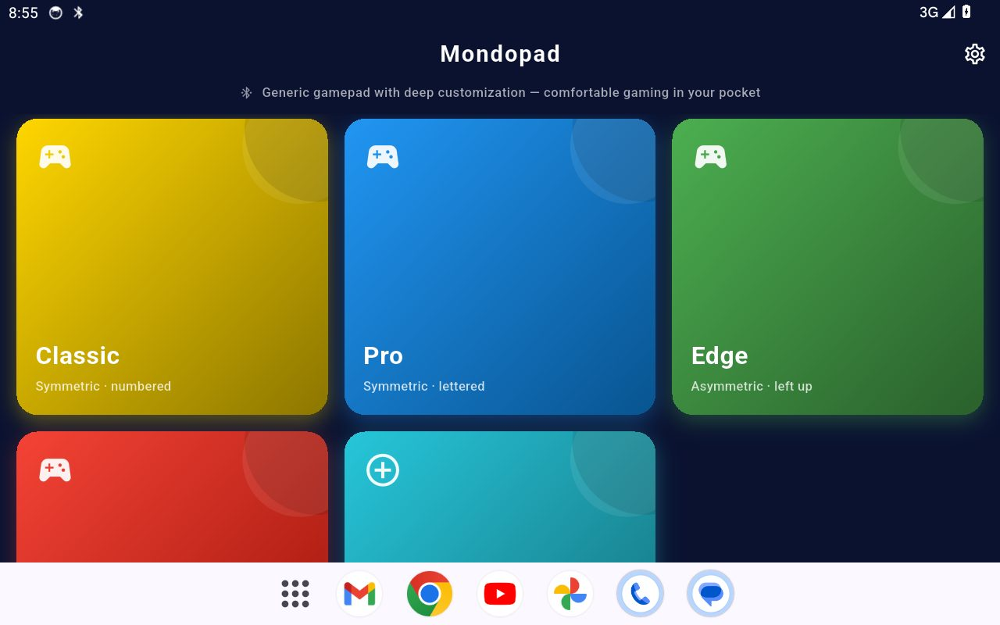
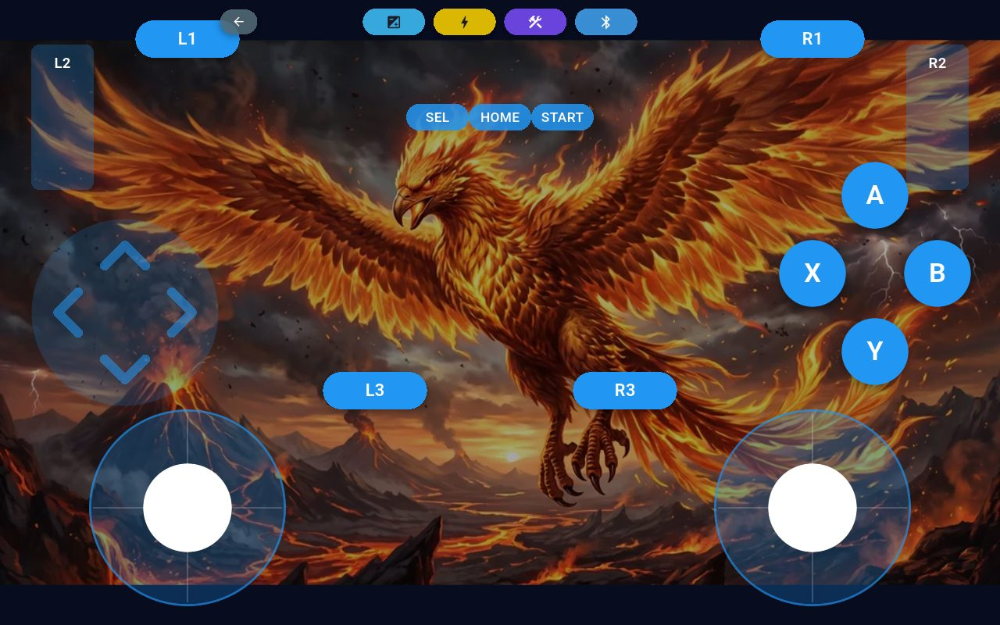
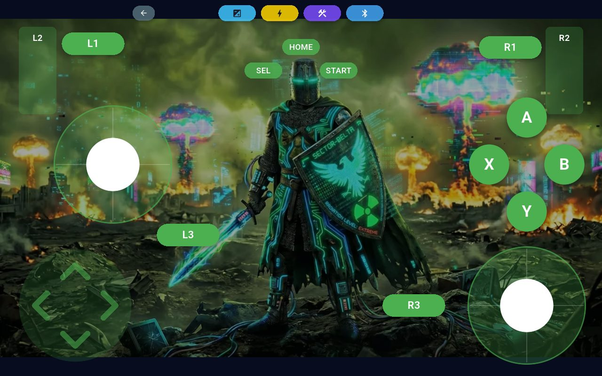
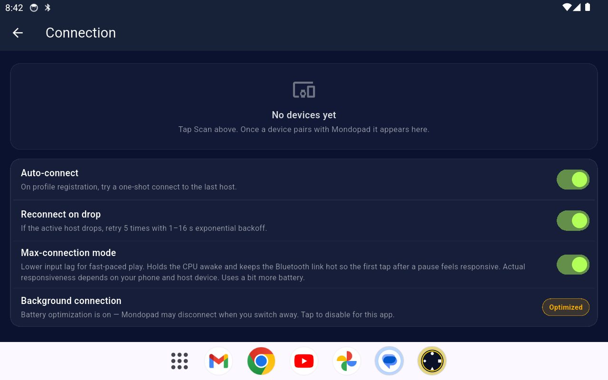

V-Pad turns the phone in your pocket into a controller for your PC — customizable layouts, analog sticks, triggers and haptics. No extra hardware to buy. V-Pad, cebindeki telefonu bilgisayarın için bir kumandaya çevirir — özelleştirilebilir düzenler, analog çubuklar, tetikler ve titreşim. Ekstra donanım almana gerek yok.
The helper is free and only needed for iPhone. On Android nothing extra is required. iOS version is in beta — see below. Yardımcı program ücretsiz ve yalnız iPhone için gerekli. Android'de hiçbir ek şey gerekmiyor. iOS sürümü beta aşamasında — aşağıya bak.
How V-Pad reaches your computer depends on the platform — and this is the one thing worth understanding before you start. V-Pad'in bilgisayarına nasıl ulaştığı platforma göre değişiyor — başlamadan önce anlaşılması gereken tek şey bu.
The phone presents itself as a real Bluetooth gamepad and pairs with your PC or console directly. Nothing to install on the computer — pair it like any controller and play. Telefon kendini gerçek bir Bluetooth gamepad'i olarak tanıtır ve bilgisayarına ya da konsoluna doğrudan eşlenir. Bilgisayara hiçbir şey kurmana gerek yok — herhangi bir kumanda gibi eşle ve oyna.
Apple reserves the Bluetooth gamepad role for the system, so no iPhone app can appear in your computer's Bluetooth list. V-Pad reaches your PC over your own Wi-Fi instead, through a small free helper app that runs there. Apple, Bluetooth gamepad rolünü sisteme ayırmış; bu yüzden hiçbir iPhone uygulaması bilgisayarının Bluetooth listesinde görünemez. V-Pad bunun yerine bilgisayarına kendi Wi-Fi ağın üzerinden, orada çalışan küçük ve ücretsiz bir yardımcı programla ulaşır.
Why not Bluetooth on iPhone? It is a platform restriction, not a missing feature: iOS refuses to let third-party apps advertise the Bluetooth HID service. Every iPhone app in this category ships a desktop companion for the same reason. iPhone'da neden Bluetooth yok? Bu eksik bir özellik değil, platform kısıtı: iOS üçüncü taraf uygulamaların Bluetooth HID servisini yayınlamasına izin vermiyor. Bu kategorideki bütün iPhone uygulamalarının bilgisayara bir yardımcı program kurdurmasının sebebi de aynı.
One-time setup on the computer, then it just works. Bilgisayarda bir kerelik kurulum, sonrası kendiliğinden.
Download it above and run it — no installer, it lives in the system tray. Windows will warn that the file is unsigned (More info → Run anyway), then ask about network access: allow it on private networks. On first run it offers a one-time gamepad driver — accept it, that is what makes games see a real controller. Yukarıdan indir ve çalıştır — kurulum sihirbazı yok, sistem tepsisinde yaşıyor. Windows dosyanın imzasız olduğu konusunda uyaracak (Daha fazla bilgi → Yine de çalıştır), sonra ağ erişimini soracak: özel ağlar için izin ver. İlk açılışta bir kerelik gamepad sürücüsü önerir — kabul et, oyunların gerçek bir kumanda görmesini sağlayan şey o.
Keep the phone and the computer on the same network. A VPN running on the computer is the usual reason the phone cannot find it. Telefon ve bilgisayar aynı ağda olsun. Telefonun bilgisayarı bulamamasının en sık sebebi, bilgisayarda açık olan bir VPN'dir.
In V-Pad open Connection, allow Local Network access when iOS asks, tap your computer, then open any layout. In Steam also turn on Settings → Controller → Generic Gamepad Configuration Support. V-Pad'de Bağlantı'yı aç, iOS Yerel Ağ izni isteyince izin ver, bilgisayarına dokun ve bir düzen aç. Steam'de ayrıca Ayarlar → Kontrolcü → Genel Gamepad Yapılandırma Desteği'ni aç.
Move, resize and recolor every control, pick a backdrop, save your own layouts. Her kontrolü taşı, boyutlandır, rengini değiştir; arka plan seç, kendi düzenlerini kaydet.





Free. Creates a real virtual Xbox 360 controller, so games need no special support. Ücretsiz. Gerçek bir sanal Xbox 360 kumandası oluşturur, yani oyunların özel bir desteğe ihtiyacı olmaz.
DownloadİndirComing shortly. macOS gives no app a virtual gamepad, so it maps the pad onto keyboard and mouse instead. Yakında. macOS hiçbir uygulamaya sanal gamepad yolu vermiyor; bu yüzden pad klavye ve fareye eşlenir.
SoonYakındaAndroid is on Google Play now. The iPhone version is in beta testing and comes to the App Store next. Android şu anda Google Play'de. iPhone sürümü beta testinde ve sırada App Store var.
Google Play